Installation
Playing 4digits
Hint table
Authors
License
Homepage
Sourceforge Project Page


4digits is a guess-the-number puzzle game. It's called Bulls and Cows, and in China people simply call it Guess-the-Number. The game's objective is to guess a four-digit number in 8 times using as less time as possible. It is similar to Mastermind, but the four digits are different to each other. 4digits has a graphical user interface version 4digits and a textual user interface version 4digits-text. This manual demonstrates the GUI version.
Before playing 4digits, you need to install python (version 2.7 or below), python-gtk2 and python-glade2 in your computer.
Python is usually already installed in your computer if your are a using a modern Linux distribution. You can install python-gtk2 and python-glade2 from the software repository of your distribution.
Install python, python-gtk2 and python-glade2 for your system.
You need to install Python and PyGTK. Click here to download the all-in-one PyGTK installer for Windows.
Fink Project has PyGTK and gnome-python2 for Mac OS X. You can try it.
|
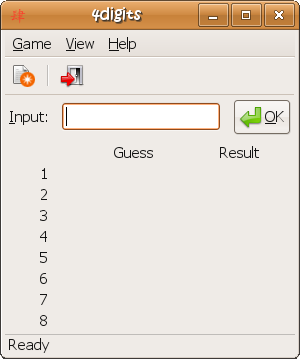 Figure 1 The main window. |
When you start 4digits, the main window is like the one shown in Figure 1. You are given eight times to guess a four-digit number. You get one A if its value and position are both correct, and you get one B if only its value is correct. You win the game when you get 4A0B. |
|
In Figure 2, you start with 1234. The answer is 5184, which is known somehow. The first guess is 1234, then you get 1A1B. Why? 1A because '4' in 1234 and 5184 has the same value and position, and 1B because '1' in 1234 and 5184 share the same value but different position. If you enter 3456 then, you get 0A2B, because the values of '4' and '5' are right but there positions are not correct. |
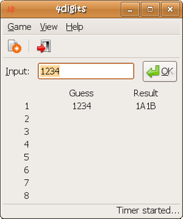 Figure 2 You get 1A1B when the answer is 5184. |
|
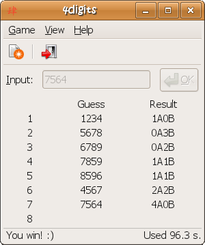 Figure 3 When you win a game. |
A typical game in which the player wins is shown in Figure 3. The answer 7564 is guessed in 96.3 seconds. |
|
If your time is in the top ten you will be shown the top ten scores, and the score you just get is highlighted. You can also view the scores later by choosing menu Game -> Scores. |
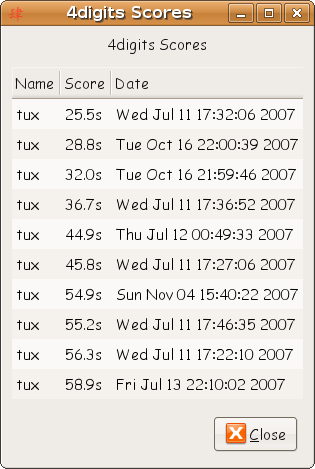 |
|
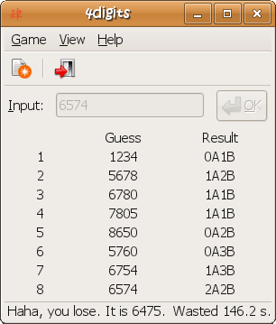 Figure 4 When you lose a game. |
In Figure 4, the player fails to guess the answer in eight times. |
|
This is an example on how to solve your game with the hint table. The hint table can be toggled from menu View -> Hint Table. All the check boxes of the left column are checked meaning all possibilities, all the check boxes of the right column are unchecked meaning no digit or place is confirmed. That is to say:
You can check menu View -> Auto Fill Hints to let the computer help you fill some obvious cases. |
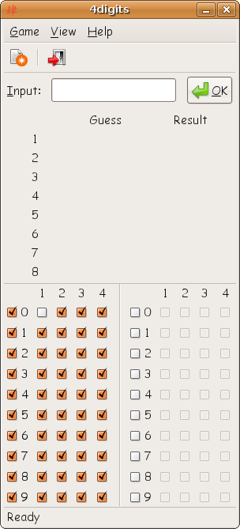 |
| 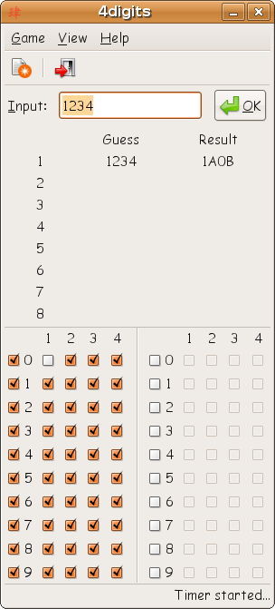 |
We don't have any information yet, so we start with a random number. There is not much we can conclude from this, but the information that one number is at the right place will be helpful later. |
|
So let's try some more random numbers, but different ones than in the first try. Now this gives us some real hints.
|
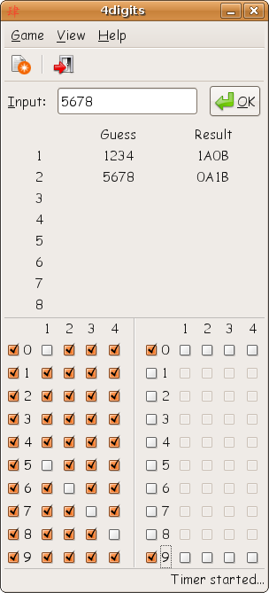 |
| 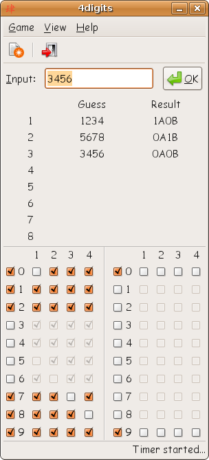 |
I tried 3456 and the answer was 0A0B. So we can be sure that none of these digits is valid. Remove them from the first grid. |
|
Next I tried 9027 and got 0A4B. So we have found all the valid digits! Mark them in both tables. |
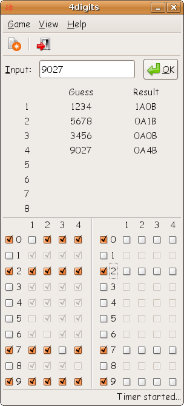 |
| 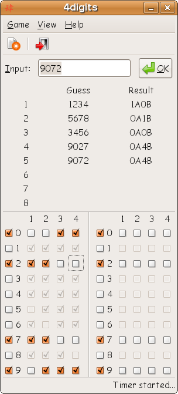 |
As in step 2 we can again exclude some places for the valid digits and mark them in the first table. I also tried 9072 which gave me the hint that 2 is not at the last place. |
|
Now we have the situation that both 2 and 7 can only go to places 1 and 2. This implies that no other digit can go to these places. So we can exclude the digit 9 from place 2. |
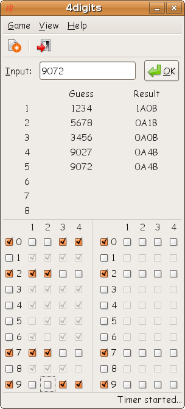 |
| 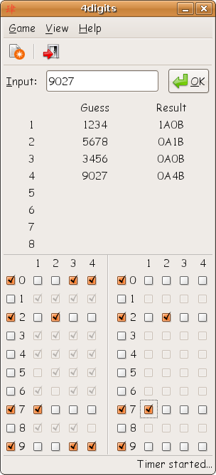 |
Now we use the information we got in step 1. The first result was that there is one digit in the right place. Obviously this can only be the 2. Mark this in both tables. Now 2 can't go to place 1, because it's already at place 2 and no duplicates are allowed. Therefore 7 must go to place 1. Mark this in both tables. |
|
Only two possible solutions left: 7209 and 7290. I choose 7209.....and win! |
 |
4digits is written by Yongzhi Pan. In 2007, Hermann Kraus added a hint table.
4digits is free software; you can redistribute it and/or modify it under the terms of the GNU General Public License as published by the Free Software Foundation; either version 2 of the License, or (at your option) any later version.
4digits is distributed in the hope that it will be useful, but WITHOUT ANY WARRANTY; without even the implied warranty of MERCHANTABILITY or FITNESS FOR A PARTICULAR PURPOSE. See the GNU General Public License for more details.
You should have received a copy of the GNU General Public License along with 4digits; if not, write to the Free Software Foundation, Inc., 51 Franklin Street, Fifth Floor, Boston, MA 02110-1301, USA.